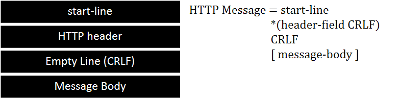

* 개인적인 공부 내용을 기록하는 용도로 작성한 글 이기에 잘못된 내용을 포함하고 있을 수 있습니다.
* 지속적으로 내용을 수정해 나갈 예정입니다.
_reference
https://developer.mozilla.org/ko/docs/Web/HTTP/Messageshttps://developer.mozilla.org/ko/docs/Web/HTTP/Messages
인프런 - 모든 개발자를 위한 HTTP 웹 기본 지식 (김영한 강사님)
_contents
#1 HTTP란?
#2 HTTP Message Structure
#3 HTTP Response & Request Message
#1 HTTP란?
HTTP(HyperText Transfer Protocol)란 HTML 문서를 전송하기 위해 고안된 프로토콜(규약) 이다.
그러나 최근에는 HTML 문서 파일 뿐 만 아니라 텍스트, 이미지, 음성, JSON 파일 등 거의 모든 형태의 데이터를 전송할 수 있도록 발전하였다.
또한 서버와 서버 혹은 서버와 클라이언트 사이에 데이터를 주고 받을 때도 대부분 HTTP를 사용한다.
HTTP1.1과 HTTP2는 TCP 기반으로 HTTP3는 UDP 기반으로 구성되어 있다.
Request & Response
HTTP는 기본적으로 Request(요청)/Response(응답)의 구조로 구성되어 있다. Client가 Server로 Request를 보내면 Server는 Client로 Request에 대한 Response(응답)을 보낸다.
즉, Request는 Client가 Server로 보내는 정보이고 Response는 Client의 Request에 대한 Server의 대답 이라고 볼 수 있다.
#2 HTTP Message Structure
HTTP Message의 전체적인 구조는 다음과 같다. HTTP 메시지는 ASCII로 인코딩된 텍스트 정보이며 여러 줄로 되어 있다.
HTTP Message는 Request Message와 Response Message로 구분된다.

#3 HTTP Response & Request Message
* start-line
start-line = request line(요청) / status line(응답)
start-line은 request line과 status line으로 나뉘며 Request Message는 request line을 Response Message는 status line을 가진다.
"request line"
[구조] request-line = HTTP method SP(공백) request-target SP HTTP-version CRLF(ENTER)
request-line은 CRLF(ENTER)를 제외하고 세 가지 요소로 구성되어 있다.
첫 번째 요소는 HTTP method로 서버가 수행해야 할 동작을 나타낸다.
HTTP method로는 GET PUSH DELETE POST .. 등이 있으며 GET은 리소스를 클라이언트로 조회해 달라는 뜻이며 POST는 요청 내역을 처리해 달라는 의미이다.
두 번째 요소는 request-target 으로 주로 URL, PORT, 도메인 등이 붙는 절대경로이다.
절대경로 = "/"로 시작하는 path
세 번째 요소는 HTTP-version 으로 Request Message에서 사용 해야 할 HTTP의 버전을 나타내어 준다.
"status line"
[구조] status-line = HTTP-version SP status-code SP reason-phrase CRLF(ENTER)
Request Message에서의 start-line(status line) 마찬가지로 세 가지 요소로 구분된다.
첫 번째 요소는 HTTP-version으로 HTTP의 버전을 나타낸다.
두 번째 요소는 status-code로 요청의 성공 혹은 실패를 나타낸다. 예를 들어 HTTP 상태코드 200은 성공 400은 클라이언트 요청에 에러가 발생했다는 뜻이다.
세 번째 요소는 reason-phrase로 사람이 이해할 수 있는 간단한 문구를 적어준다.
* HTTP header
[구조] field-name “:” OWS field-value OWS (OWS: 띄어쓰기 허용)
HTTP header에는 HTTP 전송에 필요한 모든 부가정보가 들어있다. ex) content-type , content-length
field-name은 대소문자를 구분하지 않으며 다음에 콜론(:)이 오고 field-value 값이 주어진다.
* Empty Line (CRLF)
공백 라인이다.
* Message Body
실제로 전송할 데이터가 들어간다. HTML 문서, 영상, 이미지, JSON 등 byte로 표현 가능한 모든 데이터를 전송할 수 있다.